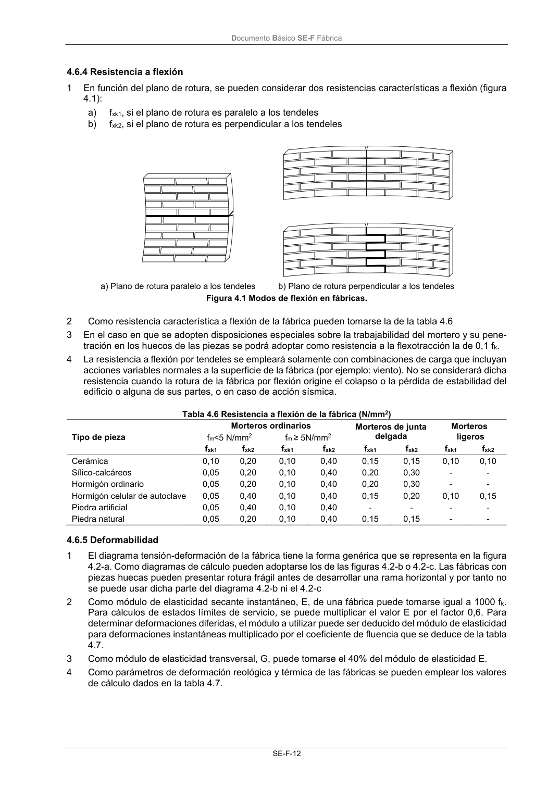

DB-SE-F · 4.6.4 Resistencia a flexión · 4.6.5 Deformabilidad · versión 2019-12-20
SHA256: e3e0805c3b4c307519c26dc34c3fdbf143d842edd013c91b0f52d2c73403d91c · página física 16 de 70 · métodos de encabezado
solo si están cotejados.
Formatos: Markdown · JSON de bloques · PDF p. 16 · imagen PNG
Documento Básico SE-F Fábrica SE-F-12 4.6.4 Resistencia a flexión 1 En función del plano de rotura, se pueden considerar dos resistencias características a flexión (figura 4.1): a) fxk1, si el plano de rotura es paralelo a los tendeles b) fxk2, si el plano de rotura es perpendicular a los tendeles a) Plano de rotura paralelo a los tendeles b) Plano de rotura perpendicular a los tendeles Figura 4.1 Modos de flexión en fábricas. 2 Como resistencia característica a flexión de la fábrica pueden tomarse la de la tabla 4.6 3 En el caso en que se adopten disposiciones especiales sobre la trabajabilidad del mortero y su pene- tración en los huecos de las piezas se podrá adoptar como resistencia a la flexotracción la de 0,1 fk. 4 La resistencia a flexión por tendeles se empleará solamente con combinaciones de carga que incluyan acciones variables normales a la superficie de la fábrica (por ejemplo: viento). No se considerará dicha resistencia cuando la rotura de la fábrica por flexión origine el colapso o la pérdida de estabilidad del edificio o alguna de sus partes, o en caso de acción sísmica. Tabla 4.6 Resistencia a flexión de la fábrica (N/mm2) Morteros ordinarios Morteros de junta delgada Morteros ligeros Tipo de pieza fm<5 N/mm2 fm ≥ 5N/mm2 fxk1 fxk2 fxk1 fxk2 fxk1 fxk2 fxk1 fxk2 Cerámica 0,10 0,20 0,10 0,40 0,15 0,15 0,10 0,10 Sílico-calcáreos 0,05 0,20 0,10 0,40 0,20 0,30 - - Hormigón ordinario 0,05 0,20 0,10 0,40 0,20 0,30 - - Hormigón celular de autoclave 0,05 0,40 0,10 0,40 0,15 0,20 0,10 0,15 Piedra artificial 0,05 0,40 0,10 0,40 - - - - Piedra natural 0,05 0,20 0,10 0,40 0,15 0,15 - - 4.6.5 Deformabilidad 1 El diagrama tensión-deformación de la fábrica tiene la forma genérica que se representa en la figura 4.2-a. Como diagramas de cálculo pueden adoptarse los de las figuras 4.2-b o 4.2-c. Las fábricas con piezas huecas pueden presentar rotura frágil antes de desarrollar una rama horizontal y por tanto no se puede usar dicha parte del diagrama 4.2-b ni el 4.2-c 2 Como módulo de elasticidad secante instantáneo, E, de una fábrica puede tomarse igual a 1000 fk. Para cálculos de estados límites de servicio, se puede multiplicar el valor E por el factor 0,6. Para determinar deformaciones diferidas, el módulo a utilizar puede ser deducido del módulo de elasticidad para deformaciones instantáneas multiplicado por el coeficiente de fluencia que se deduce de la tabla 4.7. 3 Como módulo de elasticidad transversal, G, puede tomarse el 40% del módulo de elasticidad E. 4 Como parámetros de deformación reológica y térmica de las fábricas se pueden emplear los valores de cálculo dados en la tabla 4.7.
